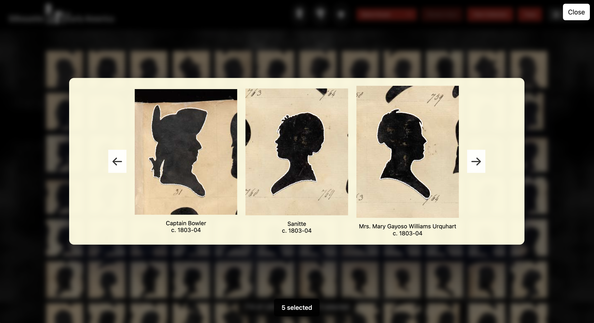
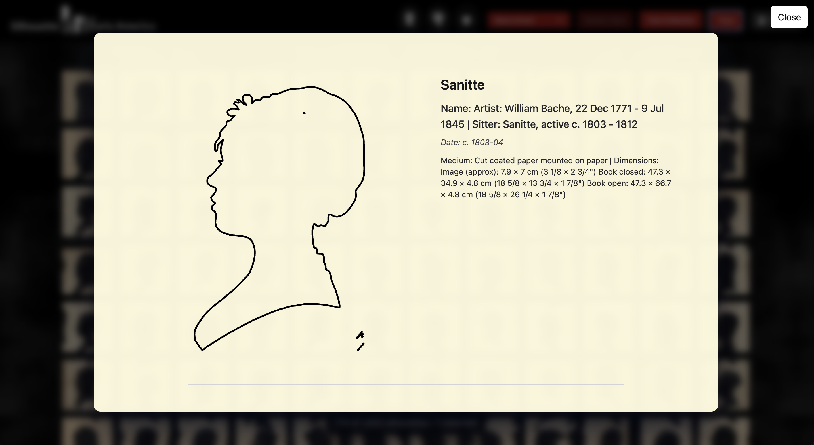
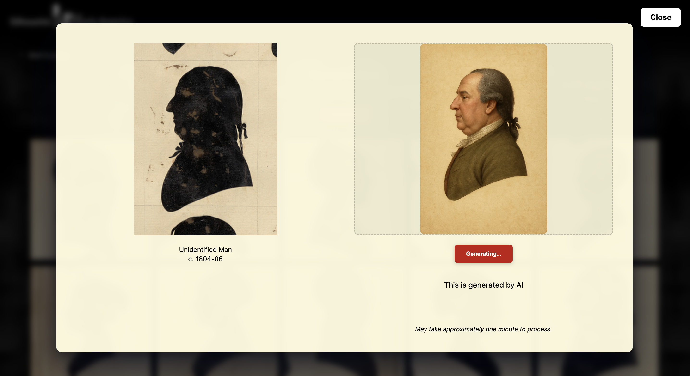
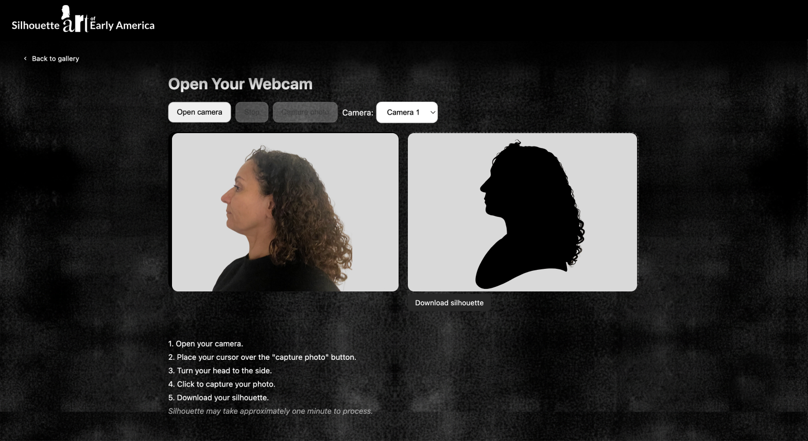

Silhouette Art of Early America
Designer & Developer · Timeframe: 2 months · Team: Solo project

Overview
Silhouette Art of Early America is a data visualization project inspired by the work of William Bache, an early nineteenth century artist who created thousands of silhouette portraits. These delicate cut paper profiles capture both likeness and mystery offering a unique glimpse into early American identity and artistry.
Traveling throughout the eastern seaboard of the United States and to the Caribbean and Cuba, Bache captured American society from politicians, everyday men, women, and children. Inexpensive to create these silhouettes were kept as mementos, placed inside a locket, added to a family album or just shared with family members.
The Project
I use Hugging Face as an AI-powered backend to extend the interactive experience beyond static data visualization. The site presents William Bache's early nineteenth-century silhouette portraits as an explorable digital archive, transforming more than 1,800 silhouettes into interactive data that users can filter, compare, and trace. Alongside this historical dataset, Hugging Face supports the webcam-based AI interaction, allowing visitors to connect their own image or presence to the visual language of silhouette portraiture.
By combining Smithsonian Open Access materials, computer vision, and AI tools, the project bridges historical portrait-making techniques with contemporary machine learning. Just as Bache used the physiognotrace to trace a sitter's profile, the AI component uses modern image-processing methods to reinterpret the user through the same idea of outline, shadow, and identity. Hugging Face makes this possible by hosting the AI/webcam component as a live model-backed experience, connecting the front-end website to an interactive AI system.

Interactive gallery of silhouette portraits

Browsing and filtering the collection

Visualizing the physiognotrace tracing technique

Using AI to visualize unidentified sitters

Creating your own silhouette with the webcam feature and AI